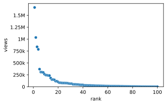

import numpy as np, polars as pl, seaborn as sns
from matplotlib.ticker import EngFormatter
views = np.sort(np.random.default_rng(418).lognormal(10, 2, 100))[::-1]
movies = pl.DataFrame({"rank": np.arange(1, 101), "views": views})
ax = sns.scatterplot(movies, x="rank", y="views")
ax.set_ylim(bottom=0)
ax.yaxis.set_major_formatter(EngFormatter(sep=""))